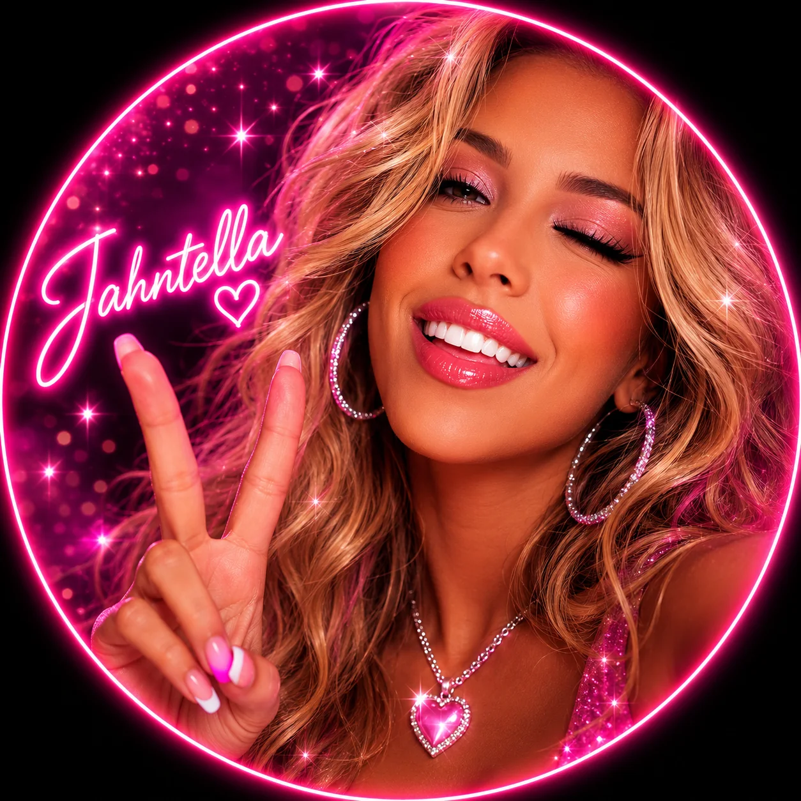
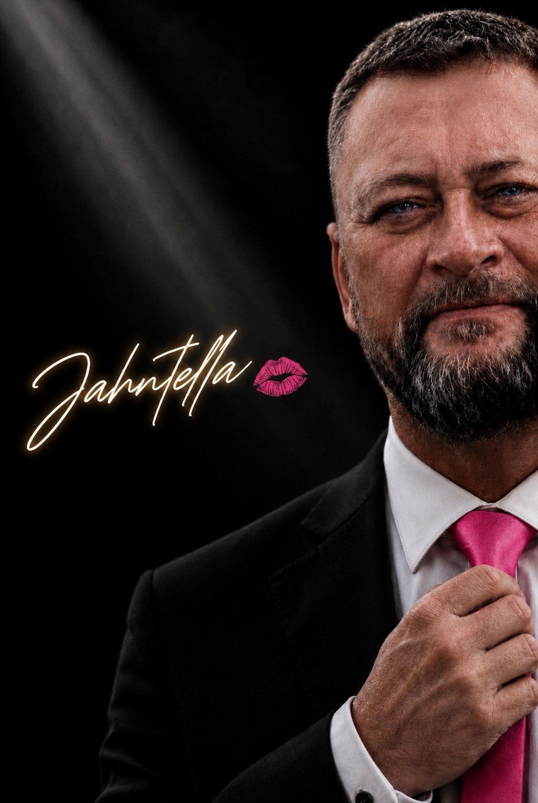

01 · CATALOG
Five eras. 50+ songs.
Sweet, Shine, Sparkle, Siren, and Surge take listeners through pop, EDM, country, R&B, and rock. Original lyrics anchor a catalog produced with AI-assisted tools.

JAHNTELLA · INVESTOR PORTAL
Jahntella is an emerging entertainment and lifestyle brand combining original music, interactive storytelling, community, beauty, fashion, and digital experiences. Five musical eras and a catalog of 50+ songs give the Sweeties a way in. Each era has its own sound, look, and mood, which can carry into stories, experiences, and product recommendations.
WHAT WE’VE BUILT
01 · CATALOG
Sweet, Shine, Sparkle, Siren, and Surge take listeners through pop, EDM, country, R&B, and rock. Original lyrics anchor a catalog produced with AI-assisted tools.
02 · VISUAL IDENTITY
Color, styling, cover art, and visualizers give each release a look of its own. Jahntella’s signature heart and crown tie the eras together.
03 · INTERACTIVE STORYTELLING
An example of how a song can become a digital experience, pairing Jahntella’s music with visual storytelling and self-discovery.
Explore Pink PetalsBUSINESS MODEL
Music and social content bring people in. Visuals, interactive stories, and conversations with the Sweeties give people a reason to return. From there, we can test which paid experiences, recommendations, and partnerships fit the audience.
RELEASED CATALOG
Build discovery and repeat listening around the existing catalog and new releases. Use actual distributor statements to measure revenue.
NEAR-TERM TEST
Pink Petals already links to independent retailer examples. Those links aren’t affiliate links. The next step is to test products that fit each era through approved affiliate programs in beauty, fragrance, fashion, and self-care. See the Little Luxuries concept.
FUTURE OPPORTUNITY
Test demand for premium interactive stories, visual collections, and practical songwriting or release guides before expanding production.
FUTURE OPPORTUNITY
Explore sponsored stories, creative campaigns, and co-created collections with partners that fit the audience. Evaluate licensing separately for assets with confirmed rights.
REVENUE PROJECTIONS
Revenue projections aren’t published yet. The first step is to establish an audience and revenue baseline, then use it to build conservative, base, and upside scenarios with explicit assumptions.
01 · AUDIENCE
Measure unique listeners, repeat website visits, story engagement, and streaming clicks by channel and era. Separate organic and paid traffic where possible.
02 · REVENUE
Record distributor payouts and, once affiliate pilots are active, track outbound clicks, approved orders, and net commissions after reversals. Keep sponsorship inquiries separate from signed and paid work.
03 · COSTS
Track production, hosting, promotion, and fulfillment costs alongside revenue. Use observed conversion and commission data to test what changes if traffic grows or acquisition costs rise.
INVESTMENT & PARTNERSHIP OPPORTUNITIES
We’re open to exploratory conversations about three priorities. Each has a clear test to run before committing to a wider rollout.
Test promotion around selected tracks and eras. Measure which campaigns drive qualified visits, repeat listening, and engagement beyond the initial click.
Develop music visuals, interactive stories, and practical industry content. Use engagement and return visits to decide where to invest more production time.
Work with aligned affiliate and brand partners on curated recommendations. Evaluate product interest and commission results before exploring inventory or co-created products.
These are areas for discussion. No funding amount or investment terms are being announced here.
WHAT’S NEXT
Write and develop new songs while giving listeners a clear starting point in the existing catalog. Build campaigns around individual tracks so each song has room to find its audience.
Develop new cover art, lyric pieces, and music visuals that bring the writing and mood of each release into focus.
Share what goes into writing songs, building a catalog, designing a release, and getting music out. Make space for honest conversations about AI-assisted production and what it takes to develop a music career.
Develop a curated lifestyle collection around the moods and stories fans connect with across the five eras.
Explore the concept ↓FUTURE COLLECTION CONCEPT
Feel beautiful. Feel confident. Feel like YOU.
The idea starts with the music, the stories behind it, and what the Sweeties discover about themselves along the way. When a listener connects with an era, Little Luxuries could give them a way to carry that mood into everyday life.
| Era | Collection direction |
|---|---|
| Sweet | Flirty glosses, playful scents, and cute accessories. |
| Shine | Glam makeup, bold fashion, and statement scents. |
| Sparkle | Self-discovery, intimate wellness, and soft luxury. |
| Siren | Romantic beauty, elegant apparel, and calming fragrances. |
| Surge | Bold fashion, expressive makeup, and high-energy beauty. |
Little Luxuries is a future concept. We plan to test product interest through curated recommendations and affiliate pilots before considering a dedicated collection.
LISTEN & FOLLOW


CREATIVE DIRECTION & CONTACT
Creative Director · Songwriter · Visual Storyteller
J.W. Hummel writes the original lyrics and leads creative direction for Jahntella, from the look of each era to the way the music is introduced to listeners.
For investor inquiries, music or visual collaborations, media opportunities, or industry partnerships, email J.W. directly.